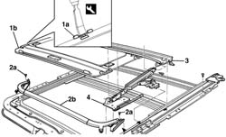

7030B14 sliding roof - dismantle and rebuild with assembly removed
- Path
- Procedures > 70 FITTINGS > 7030 SUN ROOF AND HOOD > 7030B sliding roof > 7030B14 sliding roof - dismantle and rebuild with assembly removed
- Kind
- repair procedure (removal / refitting; the operation number is the code)
- Applies to
- all engines; all production periods
- Interactive page
- https://sloeber94.github.io/elrnDB-a156/en/#/3238755
Applies to: all engines; all production periods
 Dismantling
Dismantling
 Reassembling
Reassembling1. With the suitable tool press in the interior the pads (1a), remove them from the guide and remove the drape (1b).
 | Name | Country |
|---|---|---|
1 | Scraper blade | 1.823.014.000 |
2. Loosen the screws (2a) and remove the spoiler (2b).
3. Remove the drainage race
4. Extract and remove the slide

Applies to: all engines; all production periods
Reassembling
DismantlingContoll that the various components has no damages
Insert the slide in its relative guides
Place in its seat the drainage race
Insatll the spoiler and fix it with th screws
Install the drape and verify that the pads are placed correctly
Control the functionality of all the components acting manually on the pin of the engine pinion and put the trasparent in the possible positions